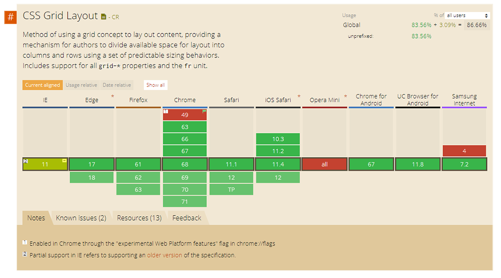

使用Grid排版
Flexbox可做出單向的排版，而Grid可以簡單的做出雙向的版型
Header
Sidebar
Main
Box1
Box2
Box3
Footer
瀏覽器的支援度
2018/09的瀏覽器支援度約83%
名詞解釋
在開始了解各項屬性之前要先了解一些Grid專用的名詞
- Grid container: Grid的父層元素
- Grid item: Grid的子層元素
- Grid line: 當產生grid網格時，用來切分空間的線
- Grid track: Grid網格中的一整欄/列
- Grid cell: Grid網格中的最小單位格
- Grid area: 由Grid數個最小單位組成的區塊
Grid屬性(Grid container)
Grid的屬性和Flex相近，分成兩種:parent/ children
Parent屬性
dispaly
- grid 最基本要先把父物件設為grid
- inline-grid 另一選項是行內grid
grid-template-columns
grid-template-rows
用來設定網格的欄數和行數，單位可以是px,%,auto或是fr等等
display: grid;
grid-template-columns: repeat(2, 1fr);
grid-template-rows: repeat(2, 1fr);
grid-template-columns: repeat(2, 1fr);
grid-template-rows: repeat(2, 1fr);
Grid-gap
用來規定grid cells間的間距
Grid-template-area
用命名的方式規定網格空間的分配
必須配合子元素的grid-area屬性來代入
h
n
m
f
grid-template-columns: repeat(3, 1fr);
grid-template-rows: repeat(3, 1fr);
grid-template-areas:
"h h h"
"n m m"
"f f f"
grid-template-rows: repeat(3, 1fr);
grid-template-areas:
"h h h"
"n m m"
"f f f"
justify-items
當子物件長度未填滿父物件切分出的空間時，對齊子物件的X軸方向，此屬性套用到所有子物件
- start 對齊左側
- end 對齊右側
- center 對齊中線
- stretch 延展
grid-template-columns: repeat(3, 1fr);
grid-template-rows: repeat(2, 1fr);
justify-items: center;
grid-template-rows: repeat(2, 1fr);
justify-items: center;
align-items
當子物件寬度未填滿父物件切分出的空間時，對齊子物件的Y軸方向，此屬性套用到所有子物件
- start 對齊上側
- end 對齊下側
- center 對齊中線
- stretch 延展
grid-template-columns: repeat(3, 1fr);
grid-template-rows: repeat(2, 1fr);
align-items: center;
grid-template-rows: repeat(2, 1fr);
align-items: center;
Children屬性(Grid item)
grid-column-start
grid-column-end
grid-row-start
grid-row-end
分別定義子物件在網格中直向及橫向的起點及終點
grid-column-start: 2;
grid-column-end: 3;
grid-row-start: 2;
grid-row-end: 3;
grid-column-end: 3;
grid-row-start: 2;
grid-row-end: 3;
grid-column
grid-row
上例也可以簡寫成grid-column和grid-row
grid-column: 2/3;
grid-row: 2/3;
grid-row: 2/3;
grid-area
功能同上，但是grid-area可與父物件的grid-template-areas一起使用
所以有兩種寫法:
- 在父物件中自定義的名字
- row-start / column-start / row-end / column-end 四個屬性簡寫在一起
align-self/ justify-self
用來對齊自身在grid網格中的位置，和flex相似